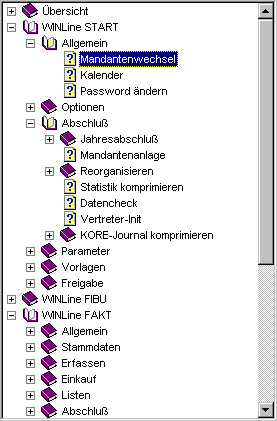

Sehr geehrter Kunde !
Willkommen bei der WinLine Edition 2025 - Version 12.30 Hilfe.
Bevor Sie sich intensiv mit der Hilfe beschäftigen, nehmen Sie sich bitte 2 Minuten Zeit, diese kleine Einführung zu lesen, in der einige Funktionen und die Bedienung der Hilfe erläutert werden.
Navigation:
Um sich im Menü des Kurses fortzubewegen, öffnen Sie entweder durch Anklicken des +-Symbols im Inhaltsverzeichnis die darunter liegenden Kapitel.

Oder Sie klicken die Buttons
bzw.
an, um ein Kapitel zurück oder vorwärts zu blättern. Diese Buttons finden Sie sowohl am Beginn als auch am Ende jeder Seite.
Hyperlinks:
Wann immer Sie einen blau hinterlegten und unterstrichenen Schriftsatz vorfinden, können Sie durch Anklicken der markierten Wörter zu dem entsprechenden Kapitel weiterspringen.
Diese markierten Verknüpfungen nennt man "Hyperlinks". Damit ist es möglich, für den Anwender sehr einfache Querverweise zwischen den einzelnen Kapiteln und Lektionen zu schaffen, ohne dass die zusammenhängenden Punkte mühsam über das Inhaltsverzeichnis herausgesucht werden müssen.
Hinweis:
Ausschließlich dokumentierte Prozesse und Vorgänge stellen verbindliche Funktionen der WinLine dar. mesonic übernimmt bei ausreichender Schulung des Endanwenders ausschließlich für die Richtigkeit der in der Dokumentation beschriebenen Programmfunktionen gemäß der AGBs idgF die entsprechende Gewährleistung. mesonic übernimmt keine Gewähr dafür, dass die Programmfunktionen den Anforderungen des Kunden genügen oder in der von ihm getroffenen Auswahl zusammenarbeiten. Insbesondere haftet ausschließlich der Endanwender für die Richtigkeit der an Dritte weitergegebenen Daten.
Viel Erfolg mit der WinLine Edition 2025 - Version 12.30 Hilfe wünscht Ihnen
Ihr mesonic Team !